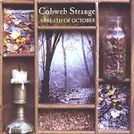

Home Artist links Label link

Cobweb Strange - A Breath Of Octover
| Artist: | Cobweb Strange |
| Title: | A Breath Of Octover |
| Label: | Genterine Records CPR-1003 |
| Length(s): | 50 minutes |
| Year(s) of release: | 2002 |
| Month of review: | [08/2003] |
Line up
Wade Summerlin - bass, acoustic guitar, vocals
Holly Williams - electric guitar
Brandi Byrum - keyboards, backing vocals
Soumen Talukder - drums
with
Kevin Andrews - chapman stick
Trevon Broad - percussion
Chris Griffin - additional guitars
Paul Jorgensen - percussion
Sean McNalley - percussion
Tracks
| 1) | The Drowning Pulse Of The Cold Green Sea | 9.02
|
| 2) | Giant | 5.14
|
| 3) | The Empty Shell | 5.08
|
| 4) | Tea For The Sleepless | 6.34
|
| 5) | Pure | 11.50
|
| 6) | Currents Of Nightshade | 4.00
|
| 7) | On With The Show | 6.34
|
| 8) | With Evening Falling | 1.17
|
Summary
The third album, and with respect to the debut we see plenty
of line-up changes. Only constant so far is Wade Summerlin who is
also responsible for all the compositions.
The music
The Drowning Pulse Of The Cold Green Sea is the mellow opener.
Easy going drums and acoustic guitars and some synth like instrument
which reminds me a bit of Anekdoten at their quietest. This is really
quite nice, subdued and a feeling that things are going to happen.
The vocals of Summerlin are still as plaintive as they used to be.
As always there is a certain bleakness about his voice as well.
The melodies on this song are understated and the song takes
a long time evolving. In the case of Anekdoten one expects heavy
and full passages of mellotron. That is not the case here, although
there are tempo changes where something similar is done. The drumming
becomes louder, but the synths stay in the back. This is much
better (and proggier) than their debut. The bass seems a bit more
subdued than on the debut, but it does contain a moody part where
it comes strongly to the fore. A good track with some good atmospheric
interplay and nice tense rich parts. In dreariness, something which
they tend (hopefully also try) to depict reminds some of Lands End,
although here instead of sadness we hear tiredness in the vocals.
I think I could have done without the female backing here.
Giant has a jazzy feel, especially the intimate drum sound has that
effect. The vocals are as always, except that when the chorus sets in
they become more prominent louder and melodic. Quite a distinctive
chorus that, up-beat. The song alternates between the up-beat chorus
and the jazzy vocal part with some more jazzy solos in between.
Opening with acoustic strumming guitar The Empty Shell, this is a
depressing track. On the one hand I am reminded of Discipline, but
the lack a good vocal melody is a problem. The song style is
on the other hand more singer songwriter than anything else. Maybe
the later Roy Harper is a good indication.
Mystery abounds on Tea For The Sleepless. Like the opener the song
enjoys some nice tense parts, dominated by bass playing, and the
whispered vocals work well.
Pure is the longest song on the album. It has elements of both Discipline
and King Crimson in the opening. Plenty of variation in the rhythm section
and a good build-up instrumental wise. The music can be likened to
some Cuneiform artists, but never becomes overly freaky. The guitar
playing is very much in the line of Fripp in the eighties. It takes quite
a bit of time, but at some point the vocals set in. The vocals
are much louder than usual, a bit psychedelic as well.
Some nice heavy accents on guitar as well, the drumming is groovy
and loose. The rhtyhm guitar becomes more prominent towards the end
when the song really starts to rock.
Currents Of Nightshade is, again, a mysterious ethereal track with
whispered vocals. Again a psychedelic feel. The guitar sound is open,
somewhat with a desert feel.
On With The Show continues in the same line with subdued marimba
like keyboards. A very warm sound. The second two thirds is up-tempo
meandering rock.
With Evening Falling is the short closing lullabye.
Conclusion
This is a much better album than the debut. The style is still recognizable
but more advanced and varied. The drumming is quite a bit better,
and vocally there is more melody and variation as well. The atmospheric
elements also help to appeal
Still not for everyone, the subdued plaintive sometimes flat vocals
have to be to your liking, but on songs such as the opener, Pure
and Tea For The Sleepless the bands obtains good result, mainly by
virtue of some tension building elements.
© Jurriaan Hage